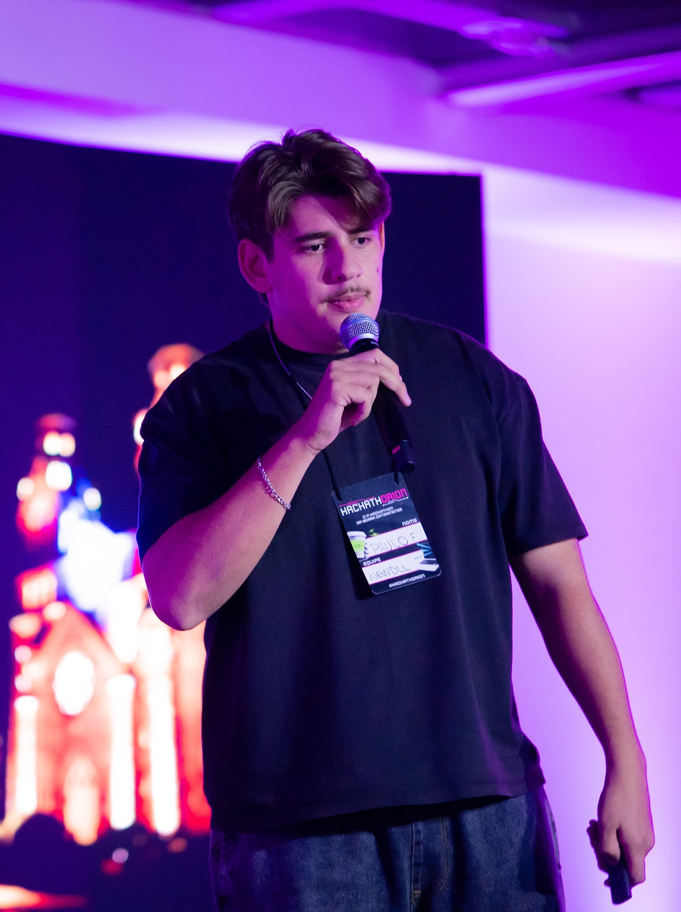
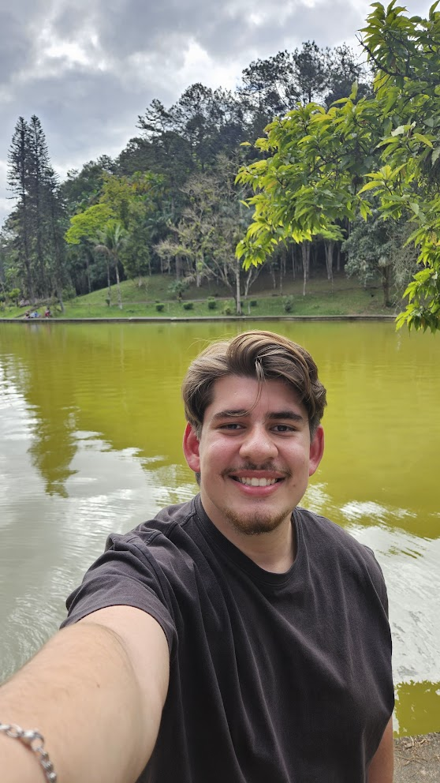

01
Sistemas Operacionais
Gerenciamento de memória, desempenho e mecanismos de sistemas.
Ciência da Computação · Pesquisa · Sistemas
Instituto Federal de Santa Catarina — IFSC
Lages, Santa Catarina, Brazil

Paulo Sérgio Furtado Filho é estudante de Ciência da Computação no Instituto Federal de Santa Catarina (IFSC) e pesquisador com interesse em Sistemas Operacionais, Arquitetura de Computadores, Sistemas Embarcados e Sistemas de Tempo Real. Desenvolve pesquisas experimentais voltadas à previsibilidade temporal, gerenciamento de memória e desempenho em plataformas embarcadas, com trabalhos envolvendo FreeRTOS, ESP32 e Raspberry Pi Pico. Também atua como professor técnico na formação em tecnologia e desenvolvimento de sistemas.

Gerenciamento de memória, desempenho e mecanismos de sistemas.
Organização e comportamento de sistemas computacionais.
Computação aplicada a plataformas com recursos restritos.
Previsibilidade temporal, latência e comportamento determinístico.
O Portal do IFSC destacou a participação de Paulo Sérgio Furtado Filho no XXXII Congreso Argentino de Ciencias de la Computación (CACIC 2026), onde seu trabalho sobre estratégias educativas inclusivas para estudantes com TEA foi selecionado como trabalho distinguido na categoria Short Papers Alumnos (SPA).
Atuo na formação técnica de estudantes dos cursos de Desenvolvimento de Sistemas, Contabilidade e Segurança do Trabalho, com foco em infraestrutura de TI, computação em nuvem, integração de sistemas e boas práticas de desenvolvimento.
Professor da disciplina de Sistemas de Informação para os cursos técnicos de Mecânica e Logística, integrando conceitos de tecnologia aos processos industriais e logísticos.
Gestão da carteira de clientes e atuação em Customer Success, com foco em retenção e organização de processos.
A experiência contribuiu significativamente para o desenvolvimento da minha didática, organização de conteúdos e habilidades de comunicação.
Para colaborações, orientações ou outros assuntos acadêmicos, entre em contato por e-mail ou pelas redes abaixo.